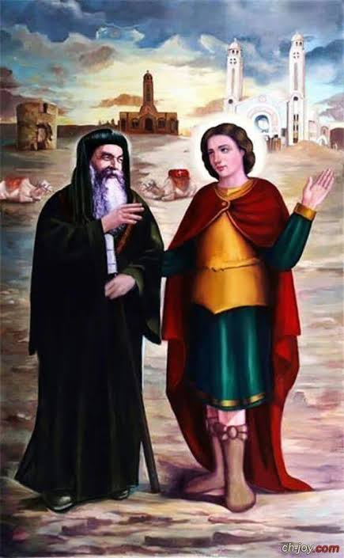
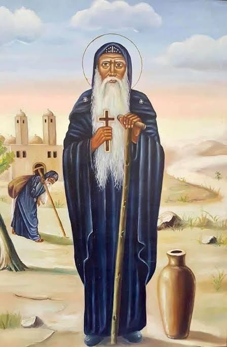
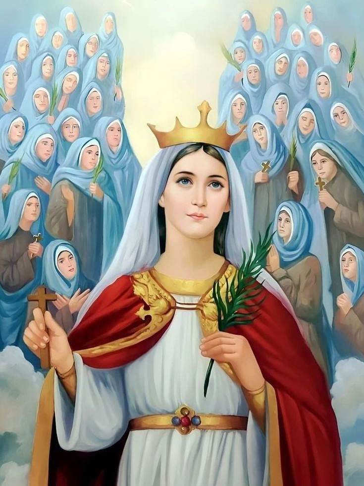
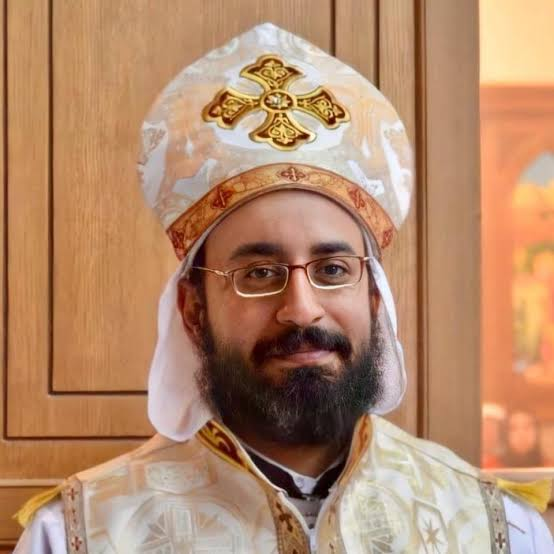
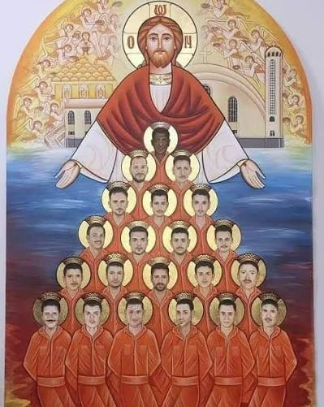
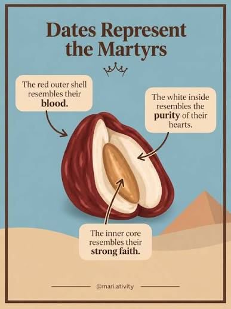

Hi, there! Welcome to my first web page.
I'm a Coptic Orthodox christian, and my church recently celebrated the Coptic New Year (Nayrouz feast) on September 11th.
The Coptic New Year is not just about marking the start of a new year on the Coptic calendar, but is also a special feast where we commemorate the Christian martyrs and are joyfully inspired by their stories, who courageously gave up their lives for the sake of our Lord Jesus Christ.
Here are some of my favourite martyrs:
- St. Mina the Wonderworker (martyed November 24, 309 AD )
- St. Moses the Strong (martyred July 1, 405 AD)
- St. Demiana (martyred January 21, 3rd or 4th century)
- Father Mina Aboud (martyred July 6, 2013)
- The 21 Coptic Martyrs of Libya (martyred February 15, 2015)
If you'd like to learn more about any of the saints listed above, click on their icon or image below.
St. Mina the Wonderworker:

St. Moses the Strong:

St. Demiana:

Father Mina Aboud:

The 21 Coptic Martyrs of Libya:

FUN FACT:
During the season of the Coptic New Year, Coptic christians often celebrate by eating dates, which symbolize the suffering, purity, and faith of the Christian martyrs.
